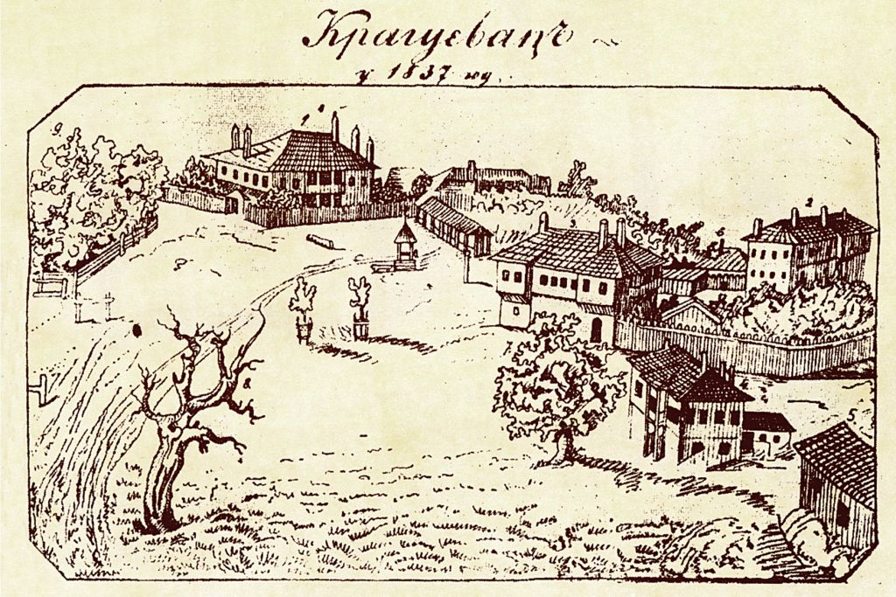

Prvi pomen u defteru
Kragujevac se po prvi put pominje u turskim katastarskim popisima kao malo selo sa 32 domaćinstva u Smederevskom sandžaku.
Od prvog turskog deftera 1476. do automobila „Zastava 750" — Kragujevac je grad u kome se moderna Srbija najpre prepoznala.
Ime grada potiče od stare slovenske reči „kraguj" — ptice grabljivice iz porodice sokolova (lat. Accipiter gentilis, jastreb), koju su u srednjem veku uzgajali za lov srpski plemići. Reč kraguj u staroslovenskom znači „onaj koji nasrće".
U turskim defterima Smederevskog sandžaka iz 1476. godine, Kragujevac se prvi put pominje kao malo selo sa 32 domaćinstva, smešteno u plodnoj dolini reke Lepenice — sa imenom koje već tada postoji u narodu.
Tokom turske vladavine, naselje je bilo polusvojevoljna varošica. Pravu istorijsku ulogu dobija tek 1818. godine, kada knez Miloš Obrenović donosi sudbonosnu odluku.

Kragujevac se po prvi put pominje u turskim katastarskim popisima kao malo selo sa 32 domaćinstva u Smederevskom sandžaku.
Posle Požarevačkog mira, Kragujevac kratko prelazi u sastav Habzburške monarhije, što ostavlja trag u urbanoj strukturi i prvim katastarskim mapama.
Kragujevac je među prvim varošima koje su oslobođene od turske vlasti. Karađorđevi ustanici proteruju dahije i grad postaje važno uporište — u njemu se okuplja oružje i sklapaju savezi okolnih nahija.
Posle propasti Prvog ustanka, Miloš Obrenović diže Drugi srpski ustanak. Šumadija — sa Kragujevcem u svom srcu — ponovo postaje žarište borbe za autonomiju Srbije.
Knez Miloš Obrenović prenosi prestonicu iz Crnuće u Kragujevac. Grad postaje politički, administrativni i diplomatski centar zemlje. Podiže se Stara crkva Svetog kneza Lazara — prvi monumentalni objekat nove vlasti.
Sultan Mahmud II izdaje Hatišerif kojim se Srbiji priznaje autonomija unutar Osmanskog carstva, a Miloš Obrenović proglašava se naslednim knezom. Vest je svečano objavljena upravo u Kragujevcu, prestonici nove autonomne kneževine.
U Kragujevcu se otvara prva apoteka u modernoj Srbiji. Iste godine počinje rad i prvi sud, prva ambulanta i prva profesionalna pošta.
Otvara se prva srednja škola u zemlji — Prva kragujevačka gimnazija. Iste godine počinje rad prve štamparije, čiji prvi proizvod su Novine srbske. Tako je Kragujevac postao i prestonica srpskog obrazovanja.
Na Velikoj narodnoj skupštini u Kragujevcu, na praznik Sretenja Gospodnjeg, donet je prvi srpski ustav — jedan od najnaprednijih ustavnih akata svoga vremena u Evropi. Zagarantovao je podelu vlasti, ukinuo feudalno ropstvo i proglasio Srbiju modernom državom.
Ustav je pisao Dimitrije Davidović po uzoru na francuski (1830) i belgijski ustav. Trajao je samo 55 dana — ali je njegova senka pala na sve buduće.
U Kragujevcu se izvodi prva profesionalna pozorišna predstava u Srbiji — početak srpskog teatra.
Osnovan je Liceum — prva visokoškolska ustanova u modernoj Srbiji, neposredni predak Beogradskog univerziteta. Iz Kragujevca je premešten 1841. u Beograd, ali je ovde napravljen prvi korak ka srpskom visokom obrazovanju.
Knez Mihailo Obrenović preneo je prestonicu u Beograd. Kragujevac, međutim, ostaje glavni industrijski i vojni centar zemlje — uloga koja će obeležiti narednih sto pedeset godina.
Osnovana je prva fabrika oružja u Srbiji — Topolivnica, koja će vremenom prerasti u Vojno-tehnički zavod i kasnije u industrijski gigant Zastava. Time je Kragujevac postao kolevka srpske industrije.
Srbija postaje međunarodno priznata nezavisna država. Kragujevac, kao njen industrijski stub, doživljava prvu veliku modernizaciju — električno osvetljenje, asfalt, prvi tramvaj na konjsku vuču.
Završena je železnička pruga koja Kragujevac povezuje sa Lapovom, a preko njega i sa magistralnim pravcem Beograd—Niš. Industrija dobija prvi pravi transportni koridor — Vojno-tehnički zavod naglo raste.
Kragujevac je glavna baza opskrbe srpske vojske u oba Balkanska rata. Vojno-tehnički zavod radi danonoćno, a iz grada kreću eseloni ka Kumanovu, Bitolju i Skadru. Šumadijska divizija postaje pojam srpskog pešadijskog ratovanja.
Kragujevac postaje komandni centar srpske vojske. Ovde je vrhovna komanda donela odluku o povlačenju preko Albanije. Vojno-tehnički zavod radi punim kapacitetom — proizvodi puške, municiju, topove. Iz Kragujevca je krenula i Žena Mileve — prva Srpkinja-vojnik u zvaničnoj jedinici.
Najtragičniji dan u istoriji grada. Nemački okupator strelja oko 2.796 ljudi, među kojima i đake i profesore Prve gimnazije. Pesnikinja Desanka Maksimović napisala je „Krvavu bajku" — pesmu koja danas pripada svim deci sveta.
Posle više od tri godine okupacije, Kragujevac je 21. oktobra 1944. — tačno tri godine od streljanja u Šumaricama — oslobođen od strane jedinica NOVJ-a i Crvene armije. Datum je simbolično odabran kao čin sećanja.
Iz Vojno-tehničkog zavoda razvija se „Zastava automobili". Već 1955. godine, po licenci italijanskog FIAT-a, počinje proizvodnja modela 1400 BJ — prvog srpskog (i jugoslovenskog) putničkog automobila u serijskoj proizvodnji.
Iz fabričkih hala izlazi i najomiljeniji jugoslovenski automobil — Zastava 750, popularno zvana „Fića". Mali, hrabri, neizdrživo simpatičan auto — koji je za 30 godina proizvodnje uknjižio preko 900.000 primeraka.
Osnovan je Univerzitet u Kragujevcu — danas jedna od vodećih visokoškolskih ustanova u zemlji, sa 12 fakulteta i preko 12.000 studenata.
Zastava lansira Yugo Koral. Pet godina kasnije, model je bio izvožen u SAD — gde je Yugo postao ime jednog cele dekade. Ukupno više od 140.000 vozila Yugo je prešlo Atlantik.
U toku NATO bombardovanja, fabrika Zastava je teško razrušena — što je gotovo zapečatilo sudbinu jugoslovenske automobilske industrije. Hiljade radnika se postavilo kao živi štit oko fabričkih hala.
FIAT (kasnije FCA, danas Stellantis) potpisuje sporazum o ulaganju u Kragujevac. Stara fabrika Zastave dobija novi život — od 2010. godine ovde se proizvode modeli FIAT 500L i FIAT Panda za evropsko tržište. Investicija od preko 2,5 milijardi evra učinila je Kragujevac jednim od najvažnijih industrijskih hubova u jugoistočnoj Evropi.
Sa ~150.000 stanovnika, Kragujevac je 4. po veličini grad u Srbiji. Administrativni, privredni, obrazovni i kulturni centar Šumadijskog okruga — grad sa pet gradskih opština, dvanaest fakulteta i industrijskim parkom kome se vraćaju investitori.
Niko ne razume Kragujevac dok ne razume Zastavu. Više od fabrike — Zastava je bila grad u gradu, način života, izvor ponosa i, povremeno, izvor prkosa. Generacije Kragujevčana su rođene, školovane, zaposlene i venčane u senci njenih hala.
Mali detalji, velike priče. Stvari koje će vas iznenaditi i o gradu u kome ste možda već nebrojeno puta bili.
U Kragujevcu je bila prva pozorišna predstava, prva apoteka, prva gimnazija, prva štamparija, prve novine, prvi sud i prvi ustav u Srbiji. Zato ga zovu — gradom prvenstava.
Desanka Maksimović je čula vest o stradanju 21. oktobra navečer. Pesma je bila gotova do jutra. Za jednu noć nastao je jedan od najpoznatijih antiratnih stihova u istoriji srpske književnosti.
Iako jedan od najnaprednijih u Evropi, ustav iz 1835. ukinut je posle samo dva meseca pod pritiskom Rusije, Austrije i Turske. Njegove ideje su, međutim, ugrađene u sve naredne ustave.
Kada je 1985. godine kragujevački Yugo stigao na američko tržište, koštao je $3.990 — bio je najjeftiniji auto u prodaji u SAD. Magazin „Time" ga je proglasio jednim od najlošijih ikada — i jednim od najpamtljivijih.
Spomen-park „Kragujevački oktobar" prostire se na 352 hektara — to je gotovo polovina centra Beograda. Najveći memorijalni park u jugoistočnoj Evropi.
Kragujevac je grad uz reku Lepenicu — pritoku Velike Morave. Ime reke potiče od slovenske reči „lep", a u njoj se nekada lovila pastrmka. Danas je delom natkrivena u centru grada.
Iako je Kragujevac bio njegova prestonica, knez Miloš Obrenović sahranjen je u crkvi u Topčideru u Beogradu. Ali u Kragujevcu mu je još uvek Konak kneza Miloša — kompleks koji je deo Narodnog muzeja.
Na ulazu u grad sa juga, kraj puta E-761, podignut je 2017. godine monumentalni belokameni krst — Đurđevdanski krst. Visok je tačno 21 metar — simbolika i broja žrtava i datuma.
Iz Kragujevca su Đura Jakšić (kraj života proveo u gradu), Joakim Vujić — otac srpskog teatra, Vasilije Mokranjac — kompozitor, i mnogi drugi koji su pisali srpsku kulturu.
Centralni gradski park, Veliki park, otvoren je 1898. i jedan je od najstarijih namenski projektovanih parkova u Srbiji. U njemu raste preko 50 vrsta drveća, neke stare i preko 120 godina.
U Kragujevcu je 1879. godine počeo da izlazi „Domaćica" — jedan od najstarijih časopisa namenjenih ženskoj publici u Srbiji.
Ispod Starog Arsenala se nalazi kompleks tunela i podzemnih hala iz doba Knjaževsko-srpskog arsenala. Mreža je dugačka više od kilometra — i danas je delimično dostupna javnosti za posete.
Fotografije i gravure koje beleže Kragujevac od prve prestonice do industrijskog giganta.